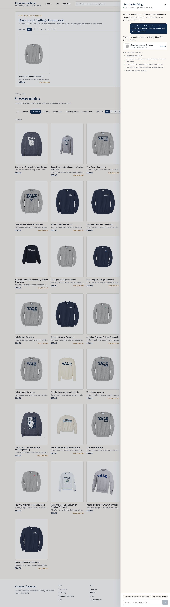
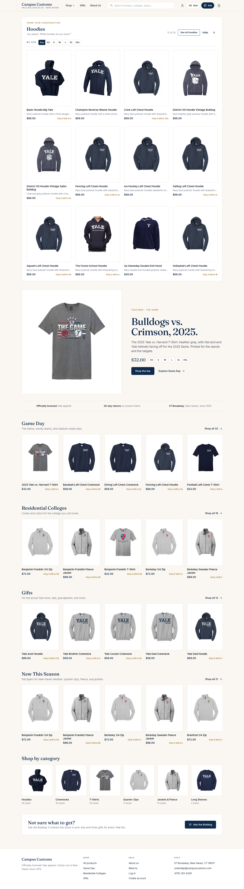
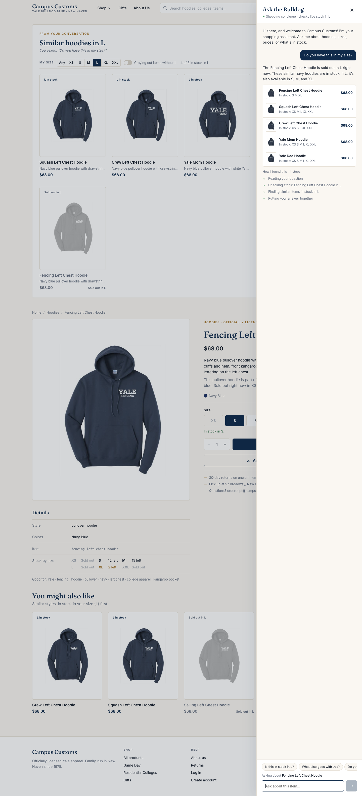

Homework 4 · Problem 11
Campus Customs — App Check
Three checks run on the live site (React + Vite on localhost:5173, FastAPI + PydanticAI agent on localhost:8000,
model gpt-6-luna) in headless Chrome on October 7, 2026, each in a fresh guest session. Each screenshot is a full-page capture, and every
number in the chat was checked against campus_customs.db. Click a screenshot to open it at full size.
- 1. Chat checks an item's inventory and pricePASS
- 2. Category question puts product cards on the pagePASS
- 3. In-stock alternatives in the shopper's size (Problem 9)PASS
Check 1 — Chat checks an item's inventory and price
PASS
What this proves: the chat answers stock and price questions honestly from the database. campus_customs.db has exactly
5 units of this crewneck in size M at $58.00, and the agent used its get_stock and get_price tools rather than guessing.
Check 2 — A category question puts product cards on the page
PASS
What this proves: the agent's structured search results reach the website and render as product cards. All 12 cards are real hoodies
whose prices match the database (25 hoodies total), and clicking a card opened its product page (/products/basic-hoodie-big-yale).
Check 3 — In-stock alternatives in the shopper's size (Problem 9)
PASS
What this proves: the find_alternatives tool works with the shopper's saved size. The database has 0 Fencing hoodies in L, and
every suggestion is in stock in L (Squash 25, Crew 8, Yale Mom 25, Yale Dad 20); the steps show "Finding similar items in stock in L".